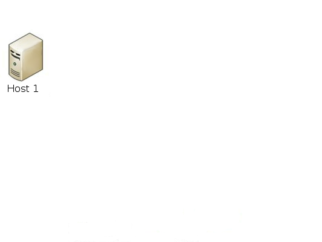
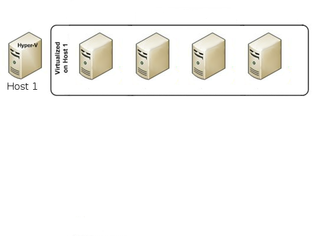
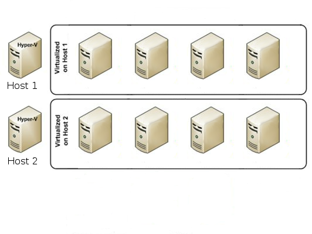
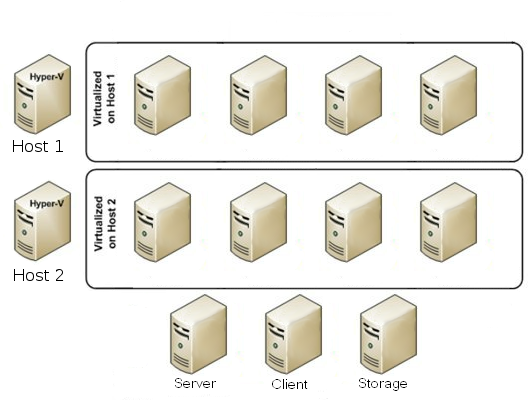
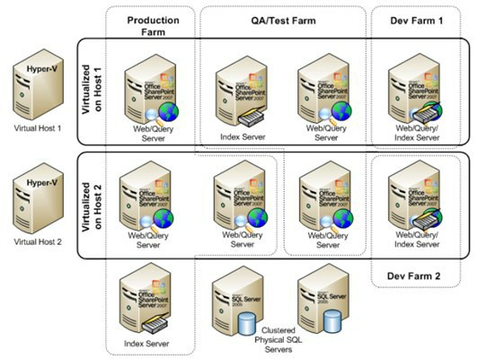

-
Virtualization: The Cloud's Reign
Joshua Embrey
-
Introduction
Virtualization is a the future of computing, both at home and in the workplace. It does this by reducing costs, increasing software availability and managing distributed loads over the working environment.
- Remember to pause.
- Be deliberate in all actions
- Do NOT be repetitive.
-
Purpose
- Define Virtualization
- Explain Virtualization
- Discuss Benefits
- Discuss Requirements
- Remember to explain each bullet.
-
Terms & Definitions
- Server - Provides services to clients
- Client - Requests use of server services
- Hardware - Physical components
- Software - Programs that run on hardware
- Firewall - Network traffic filter
- Sandbox - An open environment for testing and development
-
Virtualization is...
- ...the replacement of physical with digital.
- ...server-hosted desktops.
- ...also referred to as "cloud computing"
- ...what enables resource pooling.
- ...a cost-effective programming environment.
-
Hardware Requirements
- RAM
- Processor
- Network Card
- Displays
-
Software
- VMWare
- VirtualBox
- Citrix
- Hyper-V
-
How it works





-
Advantages
- Scalability
- Security
- Redundancy
- Cost Reduction
- Network booting
-
Network Booting
- Reason
- Network Boot vs. Client Login
- Drawbacks
-
Common Virtualizations
- Virtual Server
- Virtual Desktop
- Virtual Firewall
-
In Summary
- Virtualization offers scalability, security, redundancy
- Almost any modern computer can be take advantage of virtualization
- Usable for network booting, remote access, and sandbox program development
-
References
-
References (cont'd)